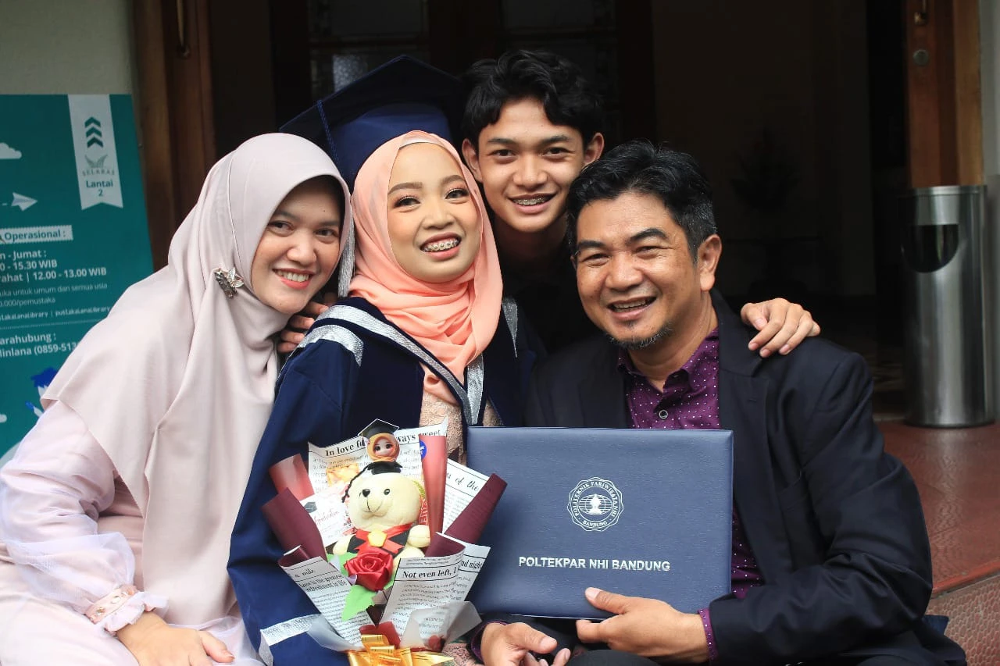

“Anak kami tetap memiliki tempat mengadu atau dibimbing secara langsung setelah tiba di Mesir.”
Baca testimoni lengkap
Alhamdulillah, jazakallah khairan kepada Hamasah International untuk anak kami yang akan melanjutkan pendidikan ke Ma'had Al-Azhar. Anak kami dibantu dan didampingi dari awal: mulai dari pengisian formulir, verifikasi berkas, pengurusan visa, dan pendaftaran ujian. Hamasah juga menyediakan program karantina untuk bimbingan bahasa Arab, bimbingan pelajaran yang akan dipelajari di Al-Azhar, serta bimbingan ujian Tahdid Mustawa dan ujian Muadalah, hingga tiba dan terdaftar resmi di Mesir.
Hamasah International dikenal sebagai lembaga resmi dan memiliki kantor perwakilan di Nasr City, Kairo. Ini memberi rasa aman ekstra bagi kami sebagai orang tua, karena anak kami tetap memiliki tempat mengadu atau dibimbing secara langsung setelah tiba di Mesir.
Wali dari Ghazalba Fauzan Luqman NatawijayaSantri Ma'had Al-Azhar